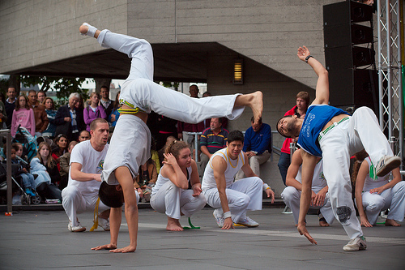
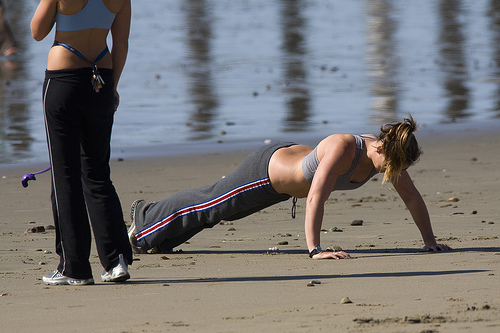
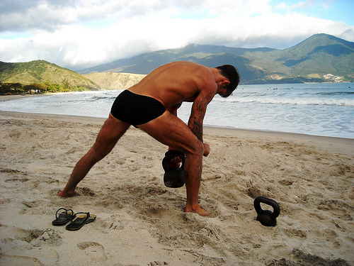

Капоэйра и важность комплексных тренировок (Cross-Training)
Чем бы вы ни занимались, будь то бег, езда на велосипеде или боевые искусства, важно, чтобы ваши тренировки были сбалансированными и комплексными. Смысл комплексных тренировок заключается в необходимости сочетать упражнения, заставляющие работать различные части тела для того, чтобы сбалансировать развитие всего организма и повысить уровень общей физической подготовки. Постоянные повторяющиеся движения создают мышечный дисбаланс и оказывают повышенную нагрузку на суставы, что в итоге значительно увеличивает шансы травм, таких как растяжения и разрывы связок. Занимаясь капойэрой, вы постоянно на сидите корточках, тянетесь, вращаетесь и находитесь в непривычных для организма положениях. Долго ли продержатся ваши колени при подобных нагрузках?

Когда вы делаете ginga, ваши квадрицепсы и ягодицы работают в полную силу, в то время как остальные мышцы бедра практически бездействуют. Кроме того, капоэйра, из-за частых стоек на руках, au и queda de rins, способствует развитию мышц кора и верхней части спины. А что происходит с остальными мышцами? Чувствуете ли вы некий дисбаланс в развитии? А как обстоят дела с вашей выносливостью? Не задыхаетесь ли вы после 30 секунд в роде? Достаточно ли вы гибкие? Это лишь некоторые вопросы, которые стоит задать себе, если вы хотите улучшить свою физическую подготовку.
Если вы занимаетесь исключительно капоэйрой, не используя другие виды тренировок, то ваши усилия никогда не будут максимально эффективными. Целенаправленные дополнительные нагрузки способствуют физическому доразвитию как отстающих групп мышц так и всего организма в целом.
Добавьте силовые тренировки, если вы чувствуете, что вам не хватает силы для выполнения тех или иных элементов. Развивайте те группы мышц, которые вы обычно не напрягаете на своих тренировках. Например, женщины, как правило, слабее в верхней части тела, в то время как большинство мужчин слабее в нижней части тела. Тренировки с дополнительным весом помогут вам приобрести необходимые силы для эффективного выполнения тех или иных элементов.

Такие упражнения как йога или пилатес отлично подходят для развития координации, гибкости и осанки, так как прекрасно прорабатывают глубокие мышцы брюшного пресса и нижней части спины. Огромное количество людей тренируются совершенно не задумываясь о своей осанке — это, в долгосрочной перспективе, приводит к болям в спине, шее и неправильному развитию плечевого пояса.
Так как капоэйра довольно активна, необходимо устраивать кардиотренировки несколько раз в неделю, чтобы улучшить вашу выносливость. Бег, плавание и велосипед помогут вам дольше находиться в роде, а также выкладываться на тренировках по полной.
Плиометрические тренировки — это специальный вид тренировок, развивающий взрывную силу. Благодаря коротким вспышкам быстрых и мощных движений вы сможете существенно улучшить свою игру в роде. Представьте себе, что вы играете Sao Bento Grande, где вы должны быстро переходить от одного удара к другому и моментально реагировать на действия оппонента — плиометрические тренировки помогут вам двигаться быстрее, прыгать выше и бегать быстрее.

Очень популярные среди смешанных боевых искусств, упражнения с гирями — очень функциональный метод тренировки силы в очень нетрадиционной манере. Подобные упражнения научат ваше тело работать как единое целое, развивая сразу силу, гибкость, равновесие и координацию всего в одной тренировке.
Если вы хотите улучшить свои способности в капоэйре или любой другой деятельности, то вам настоятельно рекомендуются комплексные тренировки. Не только для того, чтобы чувствовать себя сильнее, быстрее и собраннее, но и для того, чтобы уменьшить риск травм и оставаться здоровым на долгие годы. Ведь, будучи хорошим капоэйристом, вы должны объективно оценить свои сильные и слабые стороны, и найти место для улучшения!
по материалам roda magazine